Getting to know the bra — Cups (1): seams and shapes
Translator's note: this is the clearest single taxonomy of cup construction we've found in any language. The seam running past the Bust Point is the design's DNA — horizontal (가로심), diagonal (대각선심), or vertical (세로심) — and it predicts projection, depth, and whether the cup suits a shallow or projected bust. Note especially: vertical-seam cups tend to be shallow (Cleo Juna/Marcie cited), 3-part cups project more than 2-part, and partial-seam cups appear mostly in small cups. The FOB/FOT guidance matches English communities — but here it's taught to a Korean retail audience.
Hello, this is rysSO!
This time, let's look at the types and shapes of cups. Cups divide broadly into two: moulded cups and non-moulded cups.
Moulded cups
A moulded cup is thicker than a non-moulded cup and has no seams. Because the cup material (something like sponge/foam) is heat-formed on a mold shaped like a breast, the cup's shape is definite — and it holds its shape even when you take the bra off.
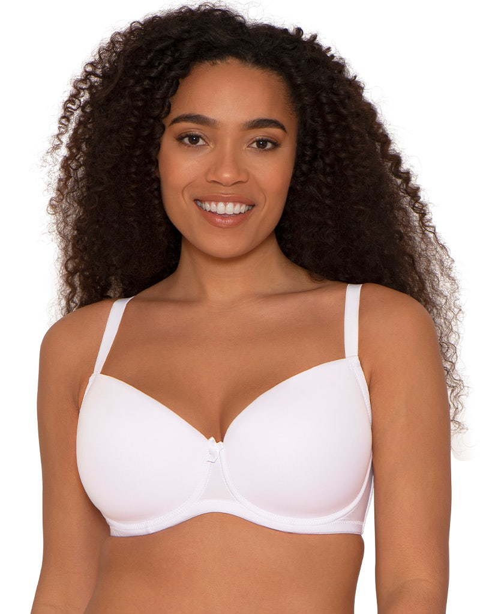
Because a moulded cup has no seam lines and is smooth, it doesn't show the bra's structure through clothes and the Bust Point doesn't show through. So I prefer moulded cups under thin, stretchy tops. Another advantage: because the shape is fixed, for people with drooping breasts it gives a "lift" effect on the breast shape. (I'm on the droopy side myself, and honestly the moulded cup looks rounder and prettier than a seamed cup.)
But since moulded cups are thicker, your bust may look a size bigger than it is. And you can't tell the cup's shape from the front alone — unlike a seamed cup, the shape doesn't jump out at you. Still, viewed from the side you can check the cup's projection and whether the upper cup edge is open or closed.
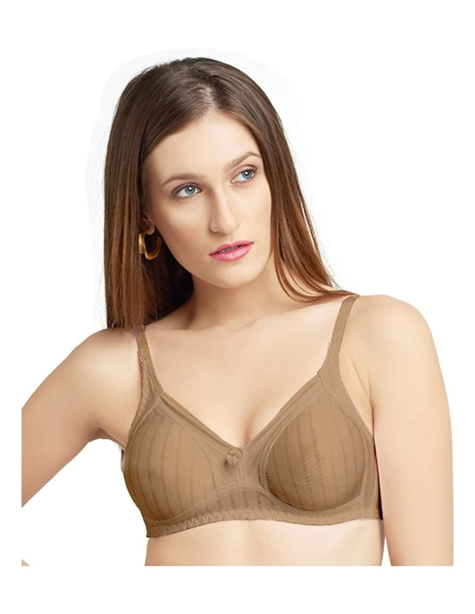
Non-moulded cups
Non-moulded cups divide again into two: seamed cups (with seams) and seamless cups (without).
Seamless non-moulded cups don't fix the shape the way a moulded cup does — they conform to your natural breast shape instead. They appear mostly in bralettes, demi bras, and some sports bras, but because the Bust Point tends to show through, the styling options are more limited.
Seamed cups (I'll just call them seamed cups): because they have seams, they hold the breast shape somewhat more than seamless cups. And because many designs are possible depending on how the pieces are sewn together, they can be applied to many bra styles!
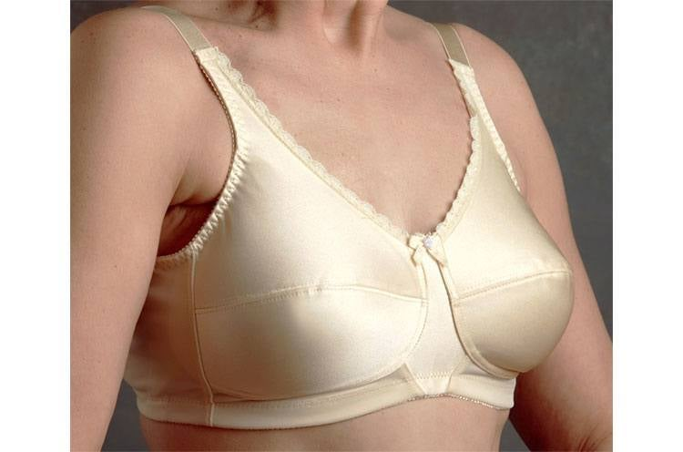
Seamed cups classify broadly into three by the shape of the seam crossing the Bust Point: horizontal (가로심), diagonal (대각선심), and vertical (세로심).
Horizontal seam (가로심)
The seam starts and ends inside the wire line. The strap attaches to the top of the cup, so the lifting effect isn't large; from the front it looks round, but from the side it makes a somewhat projected, cone-like cup. This varies with how you size and shape the upper and lower pieces, so many different shapes are possible. Since the seam starts and ends within the wire line, this design mostly appears with balcony wires or U-shaped wires (similar left/right wire lengths). Full-cup bras often have a horizontal seam, and strapless bras usually do too!
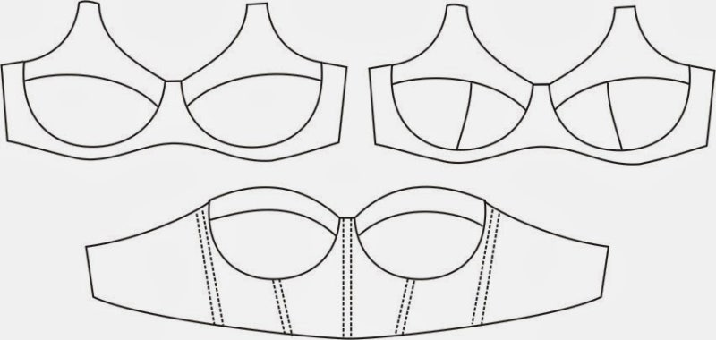
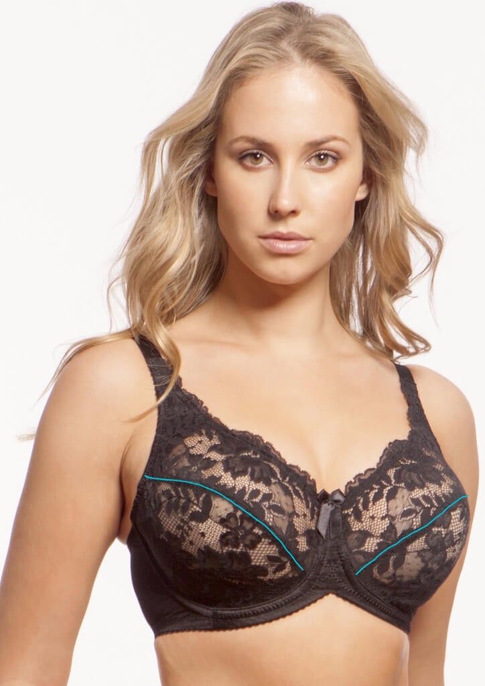
Diagonal seam (대각선심)
The seam starts at the armpit. You sometimes see it in plunge bras, and once in a while in full-cup bras in small sizes! A design with only a diagonal seam is rare — it's usually paired with a side panel (explained below). I looked it up: in the Pinup Girls patterns, the Classic and Shelley patterns use a diagonal seam.
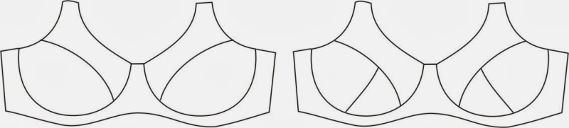
(What are Pinup Girls patterns?? They're lingerie design patterns by Canada's Beverly V. Johnson, called the "wizard of bras." People buy her patterns and make bras at home, and many foreign lingerie companies reference her patterns too. There are patterns not only for bras but for panties, body shapers, swimwear, etc.; Classic and Shelley mentioned above are among them!)
Basically, because the diagonal seam starts at the armpit, the strap must attach to the top of the cup — but as in the photos below, there's a variant where the seam's extension ends at the armpit while the seam itself bends partway, letting the strap attach to the lower cup. This is called a curved seam; in this case the breast gets support pulling it toward the center.
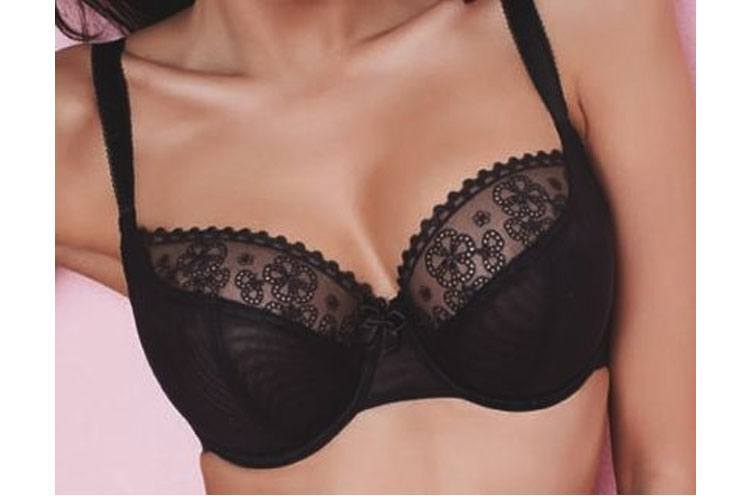
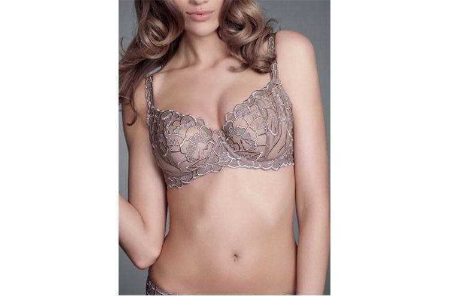
Curved seams are used in most 3/4-cup bras, and most balcony bras seem to be this form. Also, in this seam pattern, the upper cup material is almost always stretchy lace.
Vertical seam (세로심)
The seam starts at the cup's neck-line area — inward of the strap. Because the breast receives sufficient support, wearing it gives a lifted shape. But cups like the left photo's vertical seam are often shallow. Looking at bras with "shallow" reviews, most have this vertical seam — Cleo's Juna and Marcie are typical. And because of the vertical seam's character, it can't cover the top of the cup, so it's mostly used in half-cup designs.
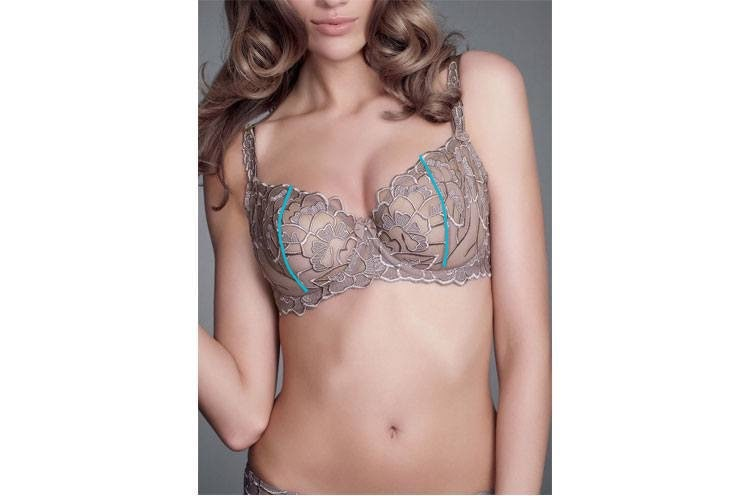
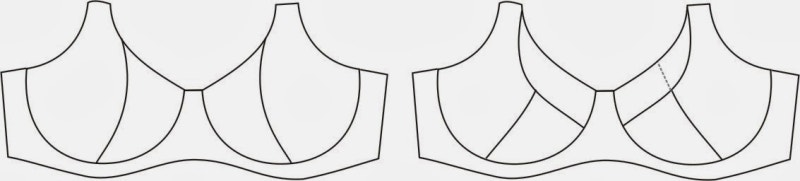
The right-hand shape looks like a curved seam at a glance ㅠㅠ — but it's the 3-part vertical seam! The difference: in a curved seam, the seam runs parallel to the upper cup edge, then bends sharply at the strap while the parallel extension runs to the armpit; in a 3-part vertical seam, the seam doesn't bend sharply — it continues to the end in a gentle curve. And while a curved seam's upper cup is usually stretchy lace, a 3-part vertical seam's upper cup is usually the same material as the lower cup.
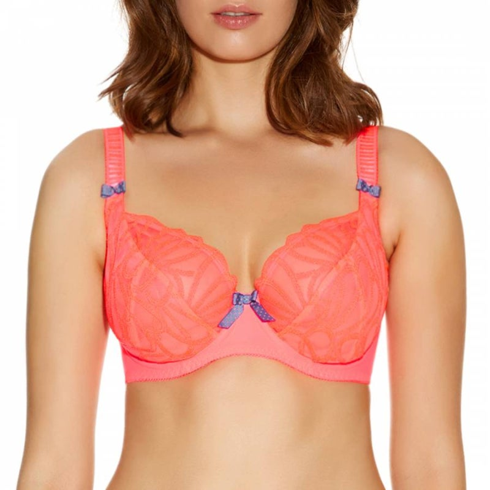
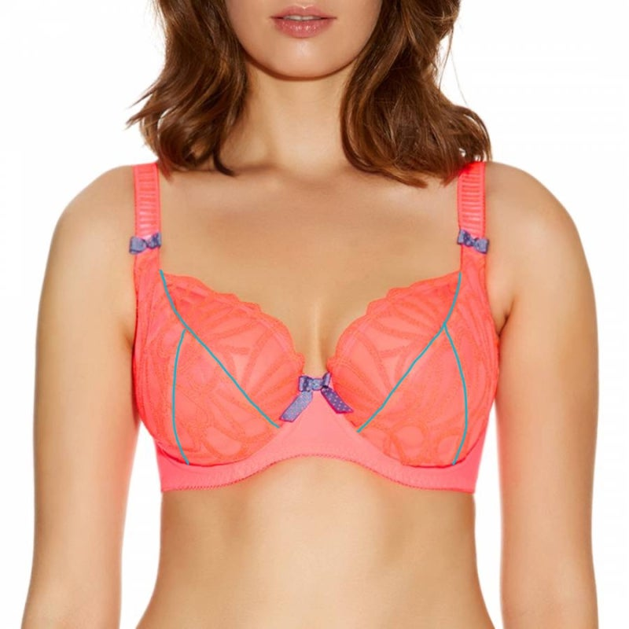
2-part vs 3-part, side panels, and partial seams
All of horizontal, diagonal, and vertical seams come in 2-part and 3-part versions. With more pieces you can achieve a more three-dimensional form, so 3-part cups project more than 2-part, and 3-part is used a lot for large cup sizes that need depth.
Besides the three main seam types, there are partial-seam cups like the photos below. These mostly appear in small cups, and occasionally in bralettes!
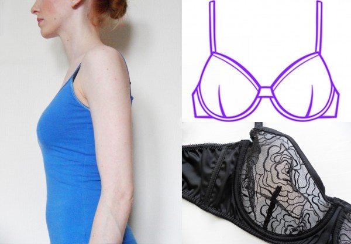
Finally, the side panel: a cup with one is sometimes called a side-support bra — literally, a design that gathers the breast inward from both sides. It's usually used together with a diagonal seam; Panache's Jasmine and the Envy I reviewed before are typical side-panel bras!
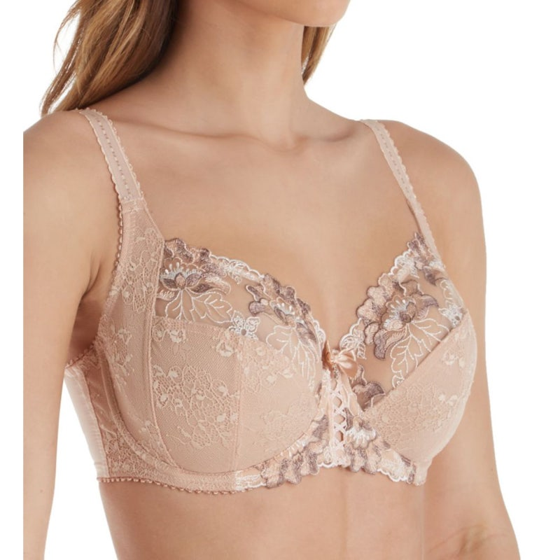
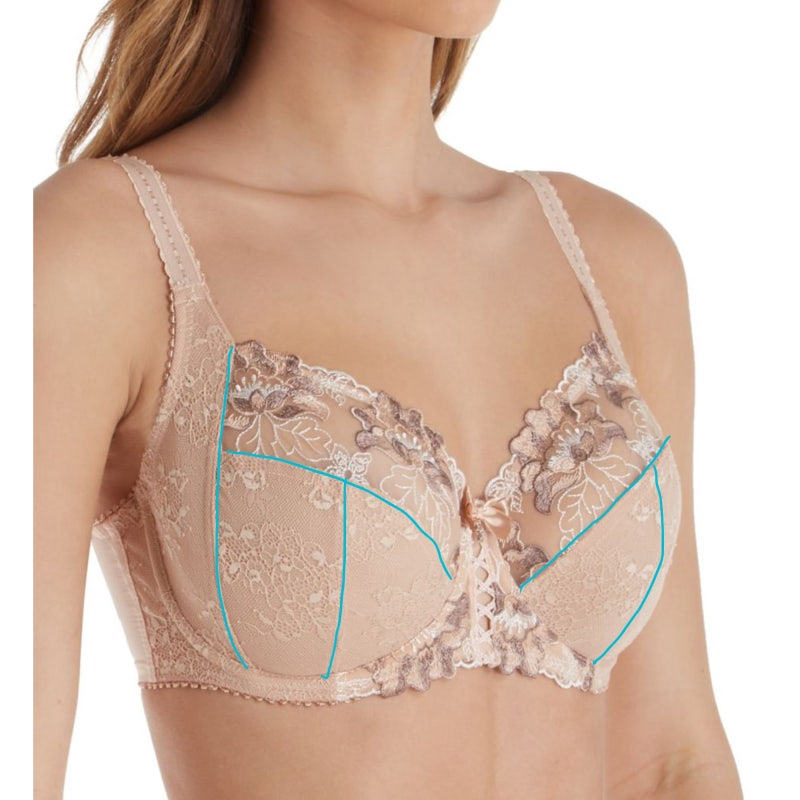
Which seam suits which breast
Depending on the pieces' shapes, seamed cups vary enormously — more or less projected, upper edge open or closed. So it's not absolute, but generally: FOB (full-on-bottom) suits horizontal seams, FOT (full-on-top) suits vertical seams; and if your breasts are shallow, look for 2-part cups; if projected, look for 3-part — that will tend to fit better.
To say it once more: this is not an answer key! Given a cup's design and character, these are simply likelier matches. An FOB can suit a vertical-seam bra, and a projected bust can suit a 2-part cup too. :)